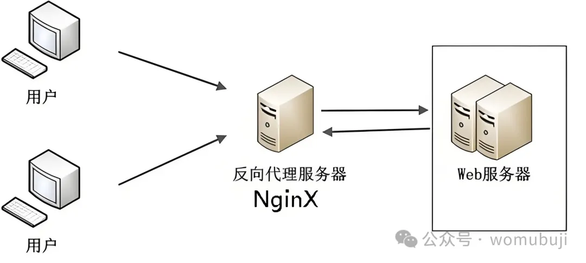

Nginx 反向代理配置详解及案例如下：
一. Nginx 反向代理配置
1. 反向代理概念
反向代理（Reverse Proxy）方式是指以代理服务器来接受 internet 上的连接请求，然后将请求转发给内部网络上的服务器，并将从服务器上得到的结果返回给 internet 上请求连接的客户端。此时，代理服务器对外就表现为一个服务器。Nginx 作为一款高性能的 Web 服务器和反向代理服务器，其反向代理功能允许将客户端的请求转发到后端服务器，并将后端服务器的响应返回给客户端。
反向代理是一种代理服务器的配置模式，它代表服务器向客户端提供服务。客户端发送请求到反向代理服务器，然后反向代理服务器将请求转发到后端的真实服务器上，并将响应返回给客户端。这种方式隐藏了后端服务器的真实 IP 地址，增加了系统的安全性。
2. Nginx 反向代理配置步骤
(1) 编辑 Nginx 配置文件：
Nginx 的主要配置文件是 nginx.conf，通常位于 Nginx 安装目录下的 conf 文件夹中。编辑该文件以配置反向代理功能。
- 全局配置：设置 worker 进程数、错误日志等。
- http 配置：设置 HTTP 服务器相关的参数，如 mime 类型、sendfile 等。
- server 配置：定义监听端口、域名、反向代理规则等。
(2) 配置反向代理：
在 server 配置中，使用 location 指令来匹配请求的 URI，并通过 proxy_pass 指令指定后端服务器的地址和端口。还可以设置 proxy_set_header 等指令来修改或添加 HTTP 头部，以便后端服务器能够正确识别请求。
(3) 保存并测试配置：
保存 nginx.conf 文件后，需要重启 Nginx 以使配置生效。可以使用 nginx -t 命令来测试配置文件的语法是否正确，然后使用 nginx -s reload 命令来平滑重启 Nginx。
(4) 验证配置：
在浏览器中访问配置的域名或 IP 地址，检查是否能够正常访问到后端服务器的资源，以验证反向代理配置是否成功。
二. Nginx 反向代理配置案例
以下是一个简单的 Nginx 反向代理配置案例：
场景描述
假设有一个 Web 应用部署在两台服务器上，地址分别为 192.168.1.100 和 192.168.1.101，端口均为 8080。现在希望通过 Nginx 来实现负载均衡，将请求平均分配到这两台服务器上。
配置文件示例（nginx.conf）
http {
# 定义后端服务器组
upstream myapp {
server 192.168.1.100:8080;
server 192.168.1.101:8080;
# 可选配置：负载均衡策略，如轮询（默认）、最少连接等
# least_conn;
}
server {
listen 80;
server_name myapp.example.com;
location / {
# 将请求转发到后端服务器组
proxy_pass http://myapp;
# 保留原始Host头
proxy_set_header Host $host;
# 传递真实客户端IP
proxy_set_header X-Real-IP $remote_addr;
# 传递经过代理链的客户端IP列表
proxy_set_header X-Forwarded-For $proxy_add_x_forwarded_for;
# 传递请求协议（http/https）
proxy_set_header X-Forwarded-Proto $scheme;
# 其他可选配置，如缓存、超时、重试等
}
# 其他location配置...
}
# 其他server配置...
}
说明
- upstream：定义了一个名为 myapp 的后端服务器组，包含了两个后端服务器的地址和端口。
- server：定义了一个监听 80 端口的 HTTP 服务器，绑定了域名 myapp.example.com。
- location：匹配所有以根路径("/")开头的请求，并将它们转发到 myapp 后端服务器组。同时设置了几个常用的 proxy_set_header 指令来传递请求信息给后端服务器。
通过以上配置，Nginx 就可以作为反向代理服务器，将来自客户端的请求平均分配到两台后端服务器上，实现负载均衡功能。